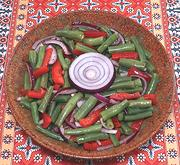

|
Green Bean SaladPoland - Sałatka z zielonej fasolki | ||||
| Makes: Effort: Sched: DoAhead: |
1-1/4 # ** 35 min Best |
A delicious, moderately tart salad, excellent for buffet parties as it will not wilt. As given it will make salads for 4, or a vegetarian lunch for 2 (with bread - follow with cheese). | |||
|
1 4 4 ----- 2 2 1 1/2 1/2 ----- |
# oz oz --- T T t t t --- |
Green Beans Onion, red Bell Pepper, red -- Dressing Vinegar (1) Olive oil ExtV Celery Seed Salt Sugar (opt) ------------------- |
Make - (35 min, + rest)
|